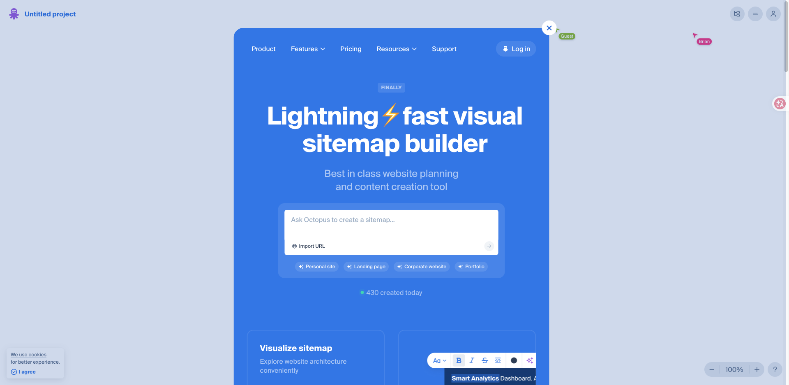

打开就画的站点地图：一个输入框起步，卡片按层级上色，整张图可以在几分钟内成型。
一张横向展开的站点地图：每层一种颜色，卡片自带子页面计数
Octopus.do 的视觉语言：层级即颜色 —— 蓝 → 青 → 黄 → 粉，一层一色，扫一眼就知道自己在树的哪一层。卡片是浅色填充 + 同色系描边，圆角比 Flowmapp 更大；连接线走直角折线，键盘 Tab / Enter 就能连续长出节点。

一个轻量的可视化站点地图工具：可视化 sitemap、整理内容、发布网站规划、导出到别处。定位是「新手和专业都能用」，所以交互做得很直白 —— 键盘就能建树。
也提供从 URL 或一句描述起步的生成方式，先把骨架铺出来，再手动改。